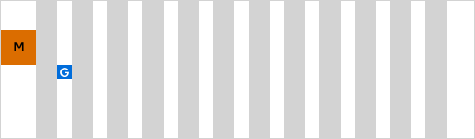
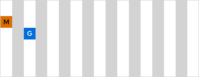
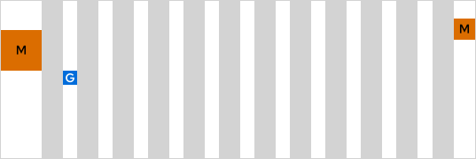
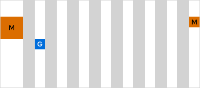
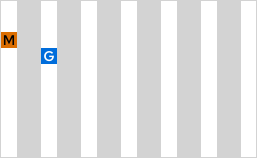

We use the 12-column grid in our design system. We have two versions of it, one for external use and
one for internal. They both are responsive and have same number of columns, but they have different
gutters and margins.

Columns
12
M
Margin
120px
G
Gutter
56px

Columns
8
M
Margin
32px
G
Gutter
32px

Columns
6
M
Margin
16px
G
Gutter
16px

Columns
12
M
Margin
Left: 88px
Right: 32px
G
Gutter
32px

Columns
8
M
Margin
Left: 88px
Right: 32px
G
Gutter
24px

Columns
6
M
Margin
16px
G
Gutter
16px
| Device | Max columns | Sizes |
|---|---|---|
| Mobile | 6 | -> 767px |
| Tablet | 8 | 768px -> 1023px |
| MinDesktop | 12 | 1024px -> 1439px |
| MaxDesktop | 12 | 1440px -> |
Our grid-system is based off of Bootstraps grid-system and works almost the same. Read the
Bootstrap documentation
. All the Bootstrap grid-system classes are available for use. To use the grid-system add the
e-grid class on a wrapper element. The bootstrap-classes will only work inside this wrapper, and
will therefore not break any other potential grid-systems.
Breakpoints
Use col-sm, col-md and col-lg to change grid at breakpoints.
Layout
Gutters
Use the class e-grid-gutters-ext (for external systems) or e-grid-gutters-int (for
internal systems) to add dynamic gutters on rows. Get vertical gutters as well by adding
the class e-grid-gutters-vertical.
Margins
Use the class e-grid-margin-ext (for external systems) or e-grid-margin-int (for internal
systems) to add dynamic margin on rows.
Spacing refers to space between UI elements. It is important to create an appropriate spatial
relationship between items and are a big part of the visual design.
Spacing refers to space between UI elements. It is important to create an appropriate spatial
relationship between items and are a big part of the visual design.
{{ item.title }}
{{ item.size }}
Something to keep in mind when choosing spacing:
- It's about logic. Related things are closer than unrelated things, so two unrelated things must be far away from each other.
- The bigger the object, the bigger space around it.
- We all need to breathe, so let the layout breathe as well.
We have defined a guide to help you choose the correct spacing. These are not rules so exceptions
may occur. Spacing will also be used differently depending on which device you are on.
- Padding inside card, table, form etc.
- Padding between typography, related input-fields, filter options etc.
- Margin between cards, tables etc.
- Margin between different sections vertically
CONTENT
Title
CONTENT
CONTENT